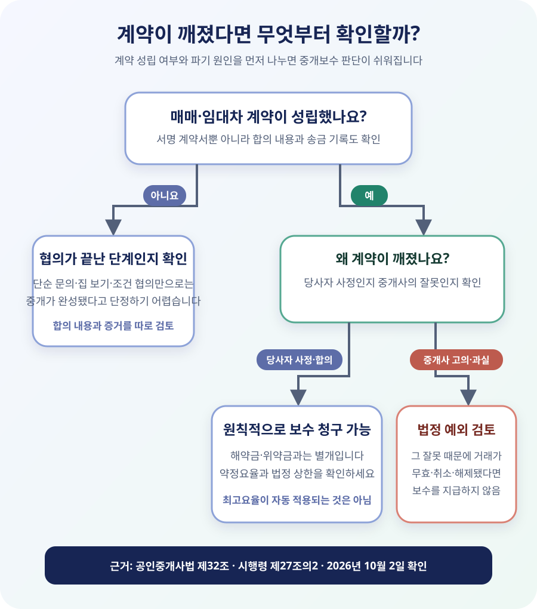

집만 보고 돌아왔다면 계약 파기와는 다릅니다
첫 질문은 “계약이 왜 깨졌나”가 아니라 “거래계약이 성립했나”입니다. 집을 몇 차례 보고 가격을 물어본 정도라면 보통은 협의 단계입니다. 반면 당사자, 목적물, 매매대금이나 보증금처럼 중요한 조건에 합의했고 계약금 일부까지 보냈다면 종이 계약서에 서명하지 않았더라도 계약 성립이 문제 될 수 있습니다.
중개보수는 중개를 통해 거래계약이 체결됐을 때 생기는 보수입니다. 따라서 계약서가 없다는 한 가지 이유만으로 “무조건 안 낸다”고 단정해서도, 중개사가 집을 보여 줬다는 이유만으로 “무조건 전액을 낸다”고 단정해서도 안 됩니다. 문자·메신저에서 합의한 조건, 계좌이체 내역, 가계약금 명목, 정식 계약서를 쓰기로 한 날짜와 추가 협의가 남아 있었는지를 함께 봐야 합니다.
| 상황 | 먼저 확인할 쟁점 | 준비할 자료 |
|---|---|---|
| 매물만 보고 조건을 협의 | 거래의 핵심 조건까지 합의했는지 | 문자, 통화 녹음, 매물 안내 내용 |
| 가계약금·계약금 일부 송금 | 돈의 성격과 합의한 계약 내용 | 이체 메모, 영수증, 합의 메시지 |
| 정식 계약서 작성 뒤 파기 | 해제 사유와 중개사 책임 여부 | 계약서, 확인·설명서, 해제 합의서 |
계약금 문제도 별개입니다. 계약금을 포기하거나 배액을 돌려받아 계약을 끝냈다고 해서 중개보수 지급 여부까지 자동으로 정리되는 것은 아닙니다. 계약금 일부만 지급한 뒤 매도인이 파기하는 경우처럼 해약금 계산이 쟁점이 되는 사건이라도 중개보수는 공인중개사법 기준으로 따로 확인해야 합니다.
당사자 마음이 바뀐 경우와 중개사 잘못은 다릅니다
공인중개사법 제32조제1항은 개업공인중개사가 중개업무에 관해 중개의뢰인에게 보수를 받는다고 정합니다. 다만 중개사의 고의 또는 과실로 중개의뢰인 사이의 거래가 무효·취소 또는 해제된 경우에는 그렇지 않다고 예외를 둡니다.
매수인이 대출이 예상보다 적게 나와 포기했거나, 매도인이 더 높은 가격을 받고 싶어 변심했거나, 임차인과 임대인이 합의해 계약을 없던 일로 한 경우는 보통 당사자 사정입니다. 이런 이유로 계약이 깨졌다면 이미 성립한 중개보수 청구권까지 없어지는 것은 아니라는 게 공식 생활법령 안내의 설명입니다. 어느 당사자가 위약금을 냈는지와 각 당사자가 자기 중개보수를 부담하는지는 별개입니다.
반면 중개사가 등기부에 기재된 압류나 근저당권을 제대로 확인·설명하지 않았고, 그 누락 때문에 상대방이 계약을 해제했다면 법정 예외가 문제 됩니다. 매도인이나 임대인의 권한을 확인하지 않았거나, 실제와 다른 내용을 고의로 설명한 경우도 마찬가지입니다. 하지만 중개사에게 작은 실수가 있었다는 사실만으로 충분하지는 않습니다. 그 고의·과실 때문에 바로 그 거래가 무효·취소·해제됐다는 연결관계까지 확인해야 합니다.
보수 지급 예외를 주장하려면 확인·설명서, 등기사항증명서 발급 시점, 문자와 녹음, 해제 통지서처럼 무엇을 잘못 설명했고 그 때문에 왜 계약을 끝냈는지 보여 주는 자료가 필요합니다. 손해배상 문제는 중개보수 지급 여부와 별도로 검토할 수 있습니다.

상한요율이 곧 청구액은 아닙니다
지급 대상이라고 해도 중개사가 법정 상한액을 당연히 전부 받을 수 있다는 뜻은 아닙니다. 공인중개사법 시행규칙 제20조는 주택 중개보수를 거래 당사자 쌍방에게 각각 받을 수 있도록 하되, 별표 1과 시·도 조례의 상한 안에서 중개의뢰인과 중개사가 서로 협의해 정하도록 합니다.
먼저 계약서나 중개대상물 확인·설명서에 적힌 보수율과 금액을 찾으세요. “법정 최고요율”과 “서로 합의한 요율”은 다를 수 있습니다. 약정이 명확하지 않다면 어느 시점에 어떤 요율을 제안하고 동의했는지 문자와 견적을 확인해야 합니다. 매도인과 매수인, 임대인과 임차인은 각자 자기 쪽 중개보수를 부담하는 구조이므로 한쪽의 파기 책임이 곧 상대방 몫까지 모두 지급한다는 뜻도 아닙니다. 상대방 손해배상이나 위약금으로 정산할지는 별도 문제입니다.
주택 매매의 상한요율은 거래금액 구간에 따라 달라집니다. 2026년 10월 2일 확인한 시행규칙 별표 1상 2억원 이상 9억원 미만 매매의 상한요율은 0.4%입니다. 임대차, 오피스텔, 상가·토지는 다른 기준을 쓰고, 주택은 지역 조례도 대조해야 합니다. 금액을 바로 확인하려면 중개보수 계산기에서 거래 유형·지역·금액을 넣되, 결과를 실제 약정액과 비교하세요.
지급일은 계약서에 약정이 있으면 그 날짜가 우선입니다
공인중개사법 시행령 제27조의2는 중개보수 지급시기를 중개사와 의뢰인의 약정에 따르도록 하고, 약정이 없을 때에는 거래대금 지급이 완료된 날로 정합니다. 계약이 잔금 전에 깨진 사건에서는 원래 예정한 잔금일, 파기 시점, 약정 문구를 두고 지급시기 다툼이 생길 수 있습니다. 지급 의무가 있다는 결론과 지금 당장 지급기일이 왔다는 결론을 한꺼번에 내리지 말고, 약정과 해제 합의서에 지급일을 따로 적는 편이 안전합니다.
6억원 아파트 계약이 잔금 전에 깨진 사례
매수인 A가 6억원 아파트 매매계약을 체결했고, 중개사와 보수율을 0.35%로 합의했다고 가정하겠습니다. 계약 후 A가 예상했던 대출을 받지 못해 계약금을 포기하고 계약을 끝냈습니다. 6억원은 매매 상한요율 0.4% 구간이지만, 실제 약정이 0.35%라면 A의 중개보수는 부가가치세를 제외하고 210만원으로 계산합니다. 최고요율 0.4%를 곱한 240만원을 자동 청구액으로 바꾸면 안 됩니다.
| 항목 | 계산·판단 | 예시 결과 |
|---|---|---|
| 계약 성립 | 정식 매매계약서 작성 | 성립 |
| 파기 원인 | 매수인의 자금 사정 | 중개사 책임 아님 |
| 약정 보수 | 6억원 × 0.35% | 210만원 |
| 법정 상한 비교 | 6억원 × 0.4% | 240만원 이내 |
| 계약금 손실 | 민법·계약서에 따라 별도 판단 | 중개보수와 별개 |
이번에는 계약 전 등기부에 압류가 있었는데 중개사가 없다고 설명했고, A가 그 설명을 믿고 계약했다가 압류를 확인한 뒤 계약을 해제했다고 가정해 보겠습니다. 이때는 단순한 매수인 변심이 아니라 중개사의 확인·설명상 과실과 해제 사이의 관계를 검토해야 합니다. 중개사가 보수를 청구하면 A는 계약 당시 등기부, 확인·설명서, 설명을 요청한 문자, 해제 사유를 적은 서면을 제시할 수 있습니다. 다만 압류 사실을 이미 알고 계약했거나 다른 이유로 파기했다면 결론이 달라질 수 있습니다.
부가가치세도 확인하세요. 계산기의 중개보수는 보통 부가세 전 금액이고, 중개사무소의 과세유형과 증빙에 따라 실제 결제액이 달라질 수 있습니다. 현금영수증이나 세금계산서를 요청하고, 법정 상한을 넘는지 볼 때 어떤 금액을 기준으로 비교했는지 구분해야 합니다.
서로 합의해 계약을 없애도 보수는 남을 수 있습니다
계약 당사자끼리 위약금 없이 원만하게 합의해제했다고 해서 중개사가 그 합의의 당사자가 되는 것은 아닙니다. 해제 합의서에 “상호 간 아무런 채권·채무가 없다”고 적어도 그 문구가 보통 중개사와의 보수 약정까지 당연히 없애지는 않습니다. 중개보수도 함께 조정하려면 중개사를 포함해 금액과 지급일을 별도로 합의해야 합니다.
반대로 중개사가 계약 파기 후 사정을 고려해 보수를 감액하거나 받지 않기로 했다면 말로만 끝내지 마세요. “이 사건 중개보수는 얼마로 최종 정산하며 추가 청구하지 않는다”는 취지의 문자나 합의서를 남기고, 지급했다면 영수증을 받으세요. 일부만 먼저 지급할 때도 잔액과 지급기한을 적어야 같은 청구를 반복해서 받지 않습니다.
이 경우에는 어떻게 해야 하나요?
중개사가 계약서를 보관하고 사본을 주지 않습니다
보수 다툼을 시작하기 전에 서명한 매매·임대차계약서와 중개대상물 확인·설명서 사본을 요청하세요. 보수율, 지급시기, 중개대상물의 권리관계가 어디에 어떻게 적혔는지 확인해야 합니다. 계약 당시 주고받은 문자와 계좌이체 내역도 원본 형태로 보관하고, 통화 내용을 정리할 때는 날짜·상대방·핵심 발언을 함께 적어 두세요. 사본 요청과 중개사의 답변 자체도 분쟁 경위를 설명하는 자료가 됩니다.
공동중개라서 중개사무소 두 곳이 각각 요구합니다
매도인 측 중개사와 매수인 측 중개사가 함께 거래한 공동중개에서는 보통 각 의뢰인이 자신이 의뢰한 중개사에게 보수를 지급합니다. 내 편 중개사 한 곳에 약정액을 지급하면 언제나 모든 중개사와 정산이 끝난다고 단정할 수는 없지만, 상대방 측 중개사가 곧바로 내게 별도 보수를 청구할 수 있다는 뜻도 아닙니다. 누구와 중개의뢰 관계를 맺었고 어떤 금액에 합의했는지, 공동중개 확인서와 계약서의 중개업자 표시를 확인하세요.
계약 당일에 계약금을 돌려받고 바로 취소했습니다
계약 유지 시간이 짧았다는 사정만으로 보수가 자동으로 없어지지는 않습니다. 중요한 것은 거래계약이 성립했는지와 취소 원인입니다. 다만 중개업무의 진행 정도, 보수 약정, 당사자의 합의에 따라 감액 협의를 시도할 수는 있습니다. 중개사가 최고요율 전액을 요구하면 실제 약정요율과 지역 상한부터 확인하고, 감액에 합의했다면 “일부 지급”인지 “최종 정산”인지 문구를 분명히 남기세요.
중개사가 먼저 계약금을 돌려주라고 권했습니다
중개사가 분쟁을 줄이기 위해 해제를 권유했다는 사실만으로 곧바로 중개사의 과실 때문에 계약이 해제됐다고 보기는 어렵습니다. 원래 계약에 어떤 문제가 있었는지, 중개사가 그 문제를 계약 전에 확인·설명할 의무가 있었는지, 해제를 선택한 직접 이유가 무엇인지를 나눠 보세요. “중개사가 해제 절차에 관여했다”는 사실과 “중개사의 잘못이 해제 원인이다”는 주장은 같은 말이 아닙니다.
중개보수 요구를 받았을 때 확인할 것
- □ 당사자·목적물·가격 등 핵심 조건에 합의해 거래계약이 성립했는지 확인했다.
- □ 계약 파기 사유를 당사자 변심·자금 사정·합의해제·중개사 잘못으로 구분했다.
- □ 중개사 고의·과실을 주장한다면 그 잘못과 계약 해제의 연결관계를 보여 줄 자료를 모았다.
- □ 계약서·확인설명서·문자에 합의한 보수율과 지급시기가 적혀 있는지 찾았다.
- □ 거래 종류와 금액에 맞는 시행규칙·지역 조례의 상한요율을 대조했다.
- □ 상대방의 중개보수, 계약금·위약금과 내 중개보수를 섞어 계산하지 않았다.
- □ 부가가치세, 현금영수증과 최종 정산 문구를 확인했다.
중개사의 과실 여부나 계약 성립 자체를 두고 다툼이 크다면 지자체 중개업 담당 부서에 법정 상한과 등록 상태를 문의할 수 있습니다. 손해와 보수가 크거나 소송 가능성이 있다면 계약서와 증거를 변호사 등 법률전문가에게 보여 주고 검토받는 편이 안전합니다. 중개사와의 보수 분쟁을 이유로 상대방과의 계약금·손해배상 기한까지 놓치지 않도록 두 쟁점을 따로 정리하세요.
공식 근거
- 국가법령정보센터 — 공인중개사법 제32조(중개보수 등)
- 국가법령정보센터 — 공인중개사법 시행령 제27조의2(지급시기)
- 국가법령정보센터 — 공인중개사법 시행규칙 제20조
- 국가법령정보센터 — 시행규칙 별표 1 주택 중개보수 상한요율
- 찾기쉬운 생활법령정보 — 부동산 중개보수 산정
정보 기준일: 2026-10-02. 예시는 주택 매매와 단순 약정요율을 사용했으며, 실제 계약 성립·해제 원인·지급시기·부가가치세·지역 조례에 따라 결론과 금액이 달라질 수 있습니다. 이 글은 개별 사건에 대한 법률 자문이 아닙니다.